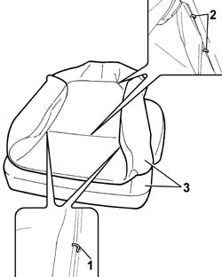

7045D20 Front seat CUSHION COVER, left or right - R.R .
- Path
- Procedures > 70 FITTINGS > 7045 FRONT SEATS > 7045D FRONT SEAT COVER/UPHOLSTERY > 7045D20 Front seat CUSHION COVER, left or right - R.R .
- Kind
- repair procedure (removal / refitting; the operation number is the code)
- Applies to
- all engines; all production periods
- Interactive page
- https://sloeber94.github.io/elrnDB-fPnd/en/#/2753256
Applies to: all engines; all production periods
 Removing
Removing
 Refitting
Refitting7045A14 Front seat CUSHION ASSEMBLY (one), left or right - R.R.
7045A79 FRAME of tilting CUSHION of a front SEAT, left or right - R.R .
1. Lift up the two side sections of the cushion cover and cut the fastening clips.
2. Lift up the centre and upper sections of the cover and cut the fastening clips.
3. Separate the squab cover from the padding.

Applies to: all engines; all production periods
Refitting
RemovingCheck that the cover is intact and that there are no signs of wear or cuts.
Fit the trim to the padding.
Using special pliers, attach the new clips in the centre and upper sections in the areas where the cover is joined with the upholstery.
 | Name | Country |
|---|---|---|
- | Pliers for metal points | 1.878.017.001 |
Using the special pliers, attach the new clips to the left and right sides of the area where the cover is joined with the upholstery.
| Name | Country |
|---|---|---|
- | Pliers for metal points | 1.878.017.001 |
7045A79 FRAME of tilting CUSHION of a front SEAT, left or right - R.R .
7045A14 Front seat CUSHION ASSEMBLY (one), left or right - R.R.